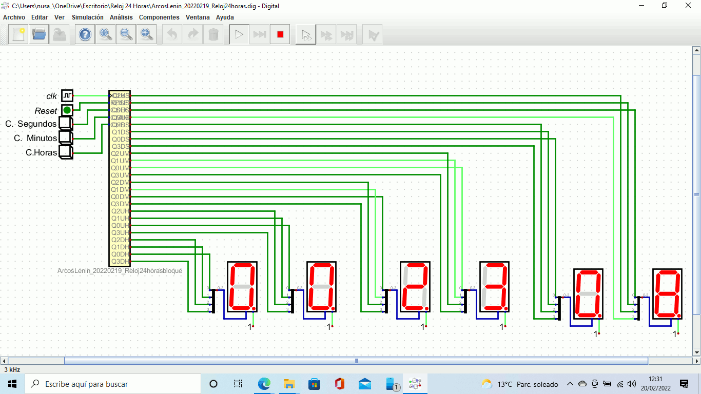

En clase hemos empezado por la parte final de combinacionales que era de la primera evaluación.
Los multiplexores su funcionamiento que es varias entradas y una única salida de datos.
Los codificadores su funcionanmiento 2 entradas y N salidas, cuya misión es presentar en la salida el código binario correspondiente a la entrada activada.
Quedó por mirar el sumador_restador pendiente.
Para la semana que viene tenemos los Flip-Flop el 17 de noviembre que es la próxima clase.
Queda aclarar que ñla tarea de clonado me queda por entegar ya que no he podido avanzar con los comando dd y tar. Lo intente muchas veces antes del vencimiento de la práctica, pero como no nos han explicado nada sobre los comandos, los haré únicamente con el menú de Clonezilla.
He estado haciendo la tarea de simulaciones lógicas, básicamente estaba más de 8 horas haciendo circuitos y varias veces corriengo que no había igualdad en las salidas.
Mientras tanto estaba también con la tarea de clonado, pero me dio muchos inconvenientes a la hora de la clonación. con el punto 5.
Acabe de hacer los circuitos y he empezado hacer la maquetación para que me quede el pdf listo para la entrega.
He avisado para que me reabran la tarea y poder entregarla, mientras tanto he seguido haciendo el clonado y el punto 6 no me quedó muy claro.
No he podido entregar la práctica debido a que no han abierto la tarea de entrega.
He puesto una portad ay un índice la práctica de simulaciones lógicas y quedó mejor la presentación del pdf, le da otra imagen.
Con el punto 6, de la tarea de clonado no hemos avanzado mucho ya que la pregunta no está bien reflejada.
Continuaré intentado para saber si puedo hacerla.
Lo que esta arriba reflejado esta escrito dde su día en concreto, teniamos que hacer las simulaciones lógicas que supuestamente también era del trimestre pasado, ahora esto es nuevo con los secuenciales y combinacionales que hay una práctica que hacer mediante Digital o Logisim Evolution.
Perdí dos días en explicaciones inútiles como siempre en una programa de GitHub que es de pago, sin embargo no se para que pone cosas como estas y encima en un documento que se supone que hay que seguir la práctica.
Por lo general era nuevo año por lo que teniamos como siempre un exámen de mateo por entregar que lo dejo como tarea, esto fue diciembre pero he dado cuenta que este txt estaba vacio y se me había olvidado mencionar esto y lo he incluido aquí, asi que ni modo. En la tarea de la coma flotante es algo que sigo esperando de como hacerlo de una vez, aun que esto lo mencione en otro txt, como no había mucha explicación y hay que hacer esto pues yo engregue lo que tenia pero como siempre no esta bien hecho.
En la clase hemos vistro de nuevo un poco de los cuircuitos combinacionales y secuenciales, pero no faltaría que siempre en estar prácticas no esta muy bien explicado lo que pide a la hora de empezar, tuve que leer varias veces para poder empezar a saber que es lo pide pero aun asi he pedido tutoria individual para aclarar dudas a las hora de hacer la práctica.
Con una tutoria que hice no he podido avanzar en la práctica de los dichosos contadores que aun así no explicó nada ni me dejó algo por lo que empezar ya que con máquina de estados finitos no sirvió, fue como tirar una tarde a la basura sin más.
Los circuitos que creado ya aparte de la tutoria, comence hacer los contadores y el reloj.
Las puertas lógicas ya las tenía hechas pero mi error de nuevo fue enseñarle a Mateo ya que dijo nuevamente que lo modifique que así no lo quiere, no es algo nuevo, repito fue un error enseñarle.

En una tutoría le enseñe trabajos ya hechos, de ante mano explico que todo esto fue en 3 semanas de tutoría con intevalos de días y que esto que estoy escribiendo ya es en mayo. Al presentarle mis trabajos me dijo lo que ya sabemos, y de nuevo empecé a arrglar cosas, pero básicamente ya tenía baste hecho y ya he empezado a entender los que tenía hecho, pero sobre la práctica hay lagunas como siempre.
Aquí ya tenia todo hecho los contadores, puertas lógicas, Kit, secuencial, bueno de este no me acuerdo muy bien el nombre de la práctica pero en fin me da igual estoy con este dichoso diario que en principio del segundo trimestre dijo que no se iba a evaluar pero mira por donde estoy haceindo esto.
Por otro lado el dichoso semáforo tiene más reformas que una centro de ciruguía estética, esto no hay quien lo diguiera, que por otro lado yo en lo personal a dia de hoy no creo que lo haga ya que no tiene sentido hacer algo sin tener una clase explicativa por lo menos con algo similar para poder asemegar e implementar a lo que se que quiere en la práctica que aún sigue y seguirá en reformas.
Fuí a clases individuales con mateo pero aun así decia que tenía mal hecho algunos trabajos y sinceramente no creo que este para decir si algo esta bien o mal sin haber explicado algo en concreto con lo que pide al respecto, en fin. Corregí algo por ahí y directamente los subí, pero he decir que tenía intenciones de hacerlo pero sin tener nada claro no pude ni siquiera comenzar con tanta reforma que hacía y seguirá haciendo.
El día del exáme fue algo nuevo como si fuese una clase nueva por que no tenía nada sentido el cuestionario con las dichosas prácticas que pedía, pero aun así he podido aprobar ya que no eran preguntas tan lasrgas como el trimestre pasado, pero habían también, pocas pero ahí estaban.
Con repecto al semáforo no hice nada ya que no entiendo nada de como empezar y con saber que me puso un dichoso 4 para todo lo que tengo , es decir el documento, el pdf y lois Gif´s, me parece sinceramente una falta de respeto para todo el tiempo que he dedicado en hacerlo y por culpa de esta ****** he suspendido otros módulos, así que yo decidí no dedicar mucho tiempo en esto, no pienso sacrificar un módulo a 4 y encima supender el parcial.